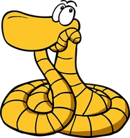
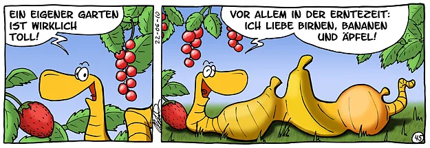
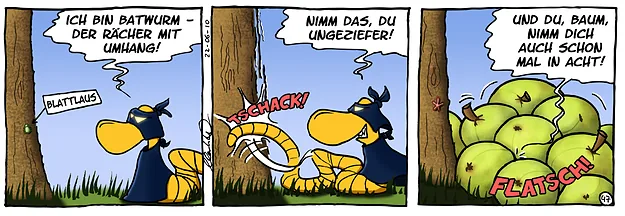
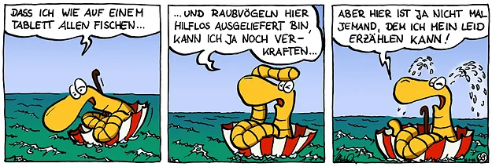

cartoons.de
cartoons.deRolli, der Regenwurm – Comic-Strips

Rolli der Regenwurm ist eine meiner ersten Comic-Figuren. Ich habe mich damals an Garfield orientiert und deshalb immer gleich eine Gruppe zusammenhängender Strips gezeichnet.
Rolli ist natürlich auch woanders unterwegs, zum Beispiel am Auenerlebnispfad Jungaue.
Die Anfänge von Rolli (und auch von meinen Zeichnungen überhaupt) findet ihr in meinen Galerien der Comic-Community toonsUp und auch hier im Archiv.
Wie so ein Strip entsteht, von der Idee über Skizze und Tusche bis zur Kolorierung, zeige ich im Comic-Tutorial.
Einige Beispiele



Zum Rolli-Archiv: alle Strips, ganz von Anfang an →
Comic-Tutorial: So entsteht ein Comic →
Weiter zu Seite 2: Rolli unterwegs auf dem Erlebnispfad Jungaue →